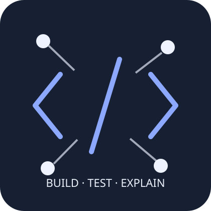

Web Core
Semantic HTML, accessibility basics, responsive CSS, DOM events
ABOUT

저는 AI/SW 학습 과정에서 단순히 기능을 복사하기보다, 왜 이 구조가 필요한지 설명할 수 있는 결과물을 만드는 데 집중합니다.
이번 포트폴리오는 프레임워크 없이 HTML, CSS, JavaScript만 사용해 브라우저의 핵심 동작을 직접 확인하는 프로젝트입니다.
SKILLS
Semantic HTML, accessibility basics, responsive CSS, DOM events
ES6+, async/await, state-driven rendering, browser storage
Git/GitHub, requirement tracing, testing, evidence-based review
React, FastAPI, database modeling, cloud deployment, AI APIs
PROJECTS
GitHub API 응답을 로딩·성공·에러·빈 상태로 나누어 렌더링합니다.
CONTACT
이 폼은 전송 예제이며 서버로 데이터를 보내지 않습니다. 입력 이벤트와 검증 상태가 화면에 어떻게 반영되는지 확인할 수 있습니다.